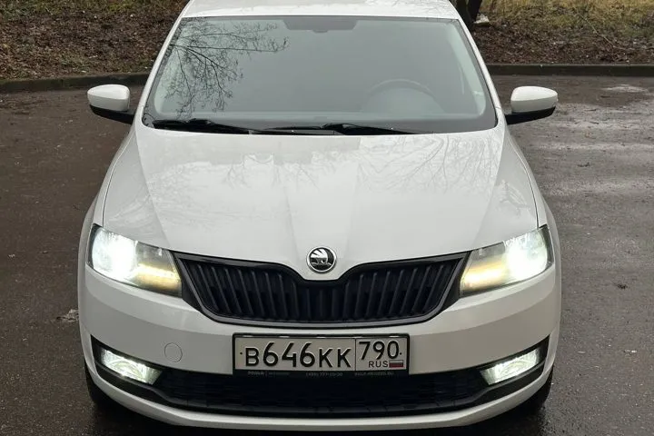

ОБЪЯВЛЕНИЕ АГЕНТСТВА
Skoda Rapid
Skoda Rapid — 2018 год, 85 000 км. Цена и наличие требуют подтверждения.



1 400 000 ₽
Цена из объявления на 27.01.2026. Цена и состав расходов указаны в публикации продавца. Актуальность и наличие требуют подтверждения.
- Кузов
- Седан
- Год
- 2018 год
- Пробег
- 85 000 км
- Двигатель
- 1.4 125 л.с.
- Статус
- Продан по каналу · 10.02.2026
Данные перенесены из публикации агентства. Характеристики, состояние и историю необходимо проверить перед покупкой.
Данные и фотографии из публикаций агентства. Дата публикации: 10.12.2025. Старые объявления не подтверждают наличие сегодня.
Позвонить Дмитрию ↗Канал агентства ↗Открыть интерактивную карточку ↗